Thursday, November 13, 2026 · 12:00 to 2:00 pm CT · Alyssa, Charlie, Cate
Two hours on the whole M&A program: the strategy, the markets, the targets, the machine that finds and converts them, and the five key decisions that will guide 2027. We walk the dashboards live; the pages behind this one are the reference copy.
| Time | Min | Block | Owner | Outcomes Desired |
|---|---|---|---|---|
| 12:00 | 10 | Goals for the session and for WildcatThis page | Charlie | Session goals agreed: align on the strategy, see the targets and the machine, make five decisions. Wildcat goals agreed: get Wildcat behind the 2027 pace and capital; show the machine well enough to earn more room between updates. |
| 12:10 | 20 | Strategy OverviewPages 2 to 3 | Charlie | Strategy statement confirmed or edited; edits captured for the Wildcat version. |
| 12:30 | 30 | Markets: where we are focused and how we score themPage 4; hub MSA Scoring | Cate | Four market tiers and the qualitative factors beside the score agreed. |
| 1:00 | 30 | Venue Targets + Our MachinePages 5 to 13; live dashboards | Cate, Charlie | You know what each stage measures, which targets are closest, and where conversion leaks. |
| 1:30 | 15 | Current InitiativesPage 14 | Cate | Plan and timing aligned; your view on what to pull forward. |
| 1:45 | 15 | Decisions Required | All | Each decision made, or given an owner and a date. |
Goal: 5 to 15+ venues in every market we enter, so each venue shares our catering, floral, and bakery hubs, one regional sales and planning team, and one marketing engine.
| Tier | Markets | Why |
|---|---|---|
| Home markets | DFW ~18, Houston ~10 (+ Caney Creek), Hill Country ~10, Atlanta 2 (+ Engine Room), Nashville 2 | Hubs built; every infill adds ancillary on day one; 58 of the 95 uncontacted top-tier venues are here |
| Focused expansion | Nashville, Atlanta, Phoenix, Orlando, Chicago, Minneapolis, Indianapolis, Cincinnati, Cleveland, Columbus, Knoxville, Greenville | A platform or leading-venue candidate in dialogue; the MSA score; owners answer |
| Next wave | Memphis, Louisville, Pittsburgh, Birmingham, Buffalo, Hartford | One region a week to Jan 18; fragmented supply, cheap to test |
| Paused | Miami (land $2.8M/acre), Salt Lake (few venues), Charlotte, Raleigh, Denver (Wedgewood), Kansas City, New Orleans, Charleston, Tyler | High score is not enough without a path to 5 venues |
| Broker-led | DC, Philadelphia, New Jersey, Baltimore, Virginia Beach, Richmond | Direct outreach fell short; brokers bring the deals |
Markets are scored on eight weighted criteria, less 3% per Wedgewood venue (DFW 4.08, Houston 4.04, Austin 3.54, Orlando 3.48, Atlanta 3.39, Nashville 3.22). Full ranking and the qualitative factors on page 4.
Hub universe: 8,748 venues scored, 4,866 own-path targets. 95 top-tier (80+) venues in the 20 target MSAs not yet contacted.
Touchpoints per week (new, follow-up, active)
3,757 touchpoints YTD (662 new, 1,559 follow-ups, 1,536 active). 70+ venues toured; 14 of 16 market visits done.
11 Texas, 8 outside. 2 closed (Firefly Lane, Hadden), 2 signed (Caney Creek, Engine Room), 2 declined but re-engaging (Grand Pines, Stoney Ridge), 12 declined, 1 died after signing (Davis & Grey).
| Criterion | Weight | What it measures |
|---|---|---|
| Weddings per 1,000 residents | 18 | Wedding intensity, including destination pull |
| Revenue pool | 16 | Annual venue dollars in the market |
| Growth rate | 16 | Population growth |
| Walters fit | 16 | Strategic fit with our expansion plans |
| Competition | 14 | Venues per 100k residents, inverted |
| Land $ per acre | 8 | Crexi land value; lower is better |
| Median wedding spend | 6 | The Wedding Report metro median |
| Population | 6 | Metro size |
| Criterion | Weight | What it measures |
|---|---|---|
| Physical-plant fit | 18 | 150+ seated, rain plan, multi-room |
| Review rating | 16 | Google, The Knot, WeddingWire, Zola average |
| Recent reviews, 12 months | 16 | Recency and momentum |
| Capacity fit | 12 | 150 to 250 seated scores highest |
| MSA / market score | 12 | From the table at left |
| Events per year | 8 | Actual throughput where known |
| Venue-type fit | 8 | Barn, estate, ballroom over restaurant, hotel |
| Ancillary hub coverage | 6 | Catering, floral, bakery within ~90 min |
| Lodging nearby | 5 | Guest lodging within 5 miles |
| Review volume | 4 | Lifetime reviews, log-scaled |
| # | MSA | Score | Venues | Status |
|---|---|---|---|---|
| 1 | Dallas-Fort Worth | 4.08 | 653 | Home |
| 2 | Houston | 4.04 | 531 | Home |
| 3 | Miami-Ft. Lauderdale | 3.86 | 164 | Paused |
| 4 | Tampa | 3.54 | 134 | Future |
| 5 | Austin | 3.54 | 271 | Home |
| 6 | Orlando | 3.48 | 148 | Focused |
| 7 | Atlanta | 3.39 | 422 | Home |
| 8 | San Antonio | 3.38 | 263 | Home |
| 9 | Nashville | 3.22 | 263 | Home |
| 10 | Salt Lake City | 3.18 | 107 | Paused |
| 11 | Washington DC | 3.16 | 304 | Broker-led |
| 12 | Raleigh | 3.10 | 142 | Paused |
| # | MSA | Score | Venues | Status |
|---|---|---|---|---|
| 13 | Jacksonville | 3.10 | 99 | Future |
| 14 | Charlotte | 2.99 | 201 | Paused |
| 15 | Charleston | 2.98 | 130 | Paused |
| 16 | Minneapolis | 2.96 | 138 | Focused |
| 17 | Seattle | 2.88 | 129 | Not pursued |
| 18 | Columbus | 2.82 | 110 | Focused |
| 19 | Cleveland | 2.82 | 118 | Focused |
| 20 | New York | 2.80 | 373 | Not pursued |
| 21 | New Jersey | 2.80 | 109 | Broker-led |
| 22 | Indianapolis | 2.78 | 131 | Focused |
| 23 | Virginia Beach | 2.78 | 95 | Broker-led |
| 24 | Greenville | 2.76 | 75 | Focused |
Score 80+ puts a venue in the top tier for outreach. Pipedrive then adjusts rank within each market: a Top deal tier lifts a venue to the upper quartile, Low caps it at the bottom, WH Passed drops out of the top 25.
| Stage | As of Nov 4 | Tool | What happens here |
|---|---|---|---|
| 1 · Identify and score | 8,748 venues scored | Venue Prioritization hub; owner enrichment; Market Intel brief | 8,069 operating venues plus 679 conversion candidates, scored on ten criteria; 4,866 on the own path, 1,827 partner, 1,073 refer; owner email verified on 3,070. MSA scoring ranks 56 markets; the map shows 90-minute reach from our hubs; the Monday brief flags news and listings on the top 1,000. |
| 2 · Contact | 3,757 touchpoints YTD | Pipedrive; funnel tracker (Touchpoints, Response Sources) | 1,202 venues contacted all time, 421 active, 662 new this year; one new region a week through Jan 18. Calls get answered 24 times per 100 vs 17 for email; responders answer by the second touch, so low-tier email stops at touch 2 and the phone goes to top and mid tier. |
| 3 · Engage | 140 confirmed interest | Funnel tracker stages; mid-funnel program; Deal Factors | 653 responded, 140 confirmed, 112 shared data. Trends one-pager (67% open), Coffee Chat cards (80% open), seller references, announcements, Value Snapshot. Deal Factors tests every Saturday which factors predict a response and an LOI. |
| 4 · Evaluate and offer | 19 LOIs sent in 2026 | Active Pipeline; LOI ledger; data books; region overviews; Review Intel | 55 live targets scored 0 to 10 with LTM and PF-Y2 economics; every offer with terms and outcome; 17 region overviews to Wildcat by Nov 23; public reviews compiled before any LOI; Wildcat reviews before signature. |
| 5 · Diligence and close | 2 under contract | Deal Command Center; Daily Deal Status email | Legal, diligence, and integration workstreams per deal with third parties on point (Quarles, Whitley Penn, WTW, BL, Matthews). Caney Creek: 8 streams running, close week of Nov 30. Engine Room: 5 running, close Dec 15. |
| 6 · Integrate and measure | 2 closed in 2026 | 120-day tracker; integration dashboard; post-close vs underwriting slide; post-mortem scorecard | Firefly Lane Q3: contracts 118% of goal. Hadden September: contracts 140%, revenue 97%; 92 contracts against a 190 goal, 15 ahead of pace; vendor packages booked within weeks of launch. Every deal measured against its underwriting at 100 days and 12 months. |
| Stage | Count | Of prior | Of contacted |
|---|---|---|---|
| Contacted (all time) | 1,202 | 25%* | 100% |
| Responded | 653 | 54% | 54% |
| Confirmed interest | 140 | 21% | 12% |
| Shared data | 112 | 80% | 9% |
| Reviewed or offered | 87 | 78% | 7% |
| LOIs sent in 2026 | 19 | 22% | 1.6% |
| Accepted | 5 | 26% | 0.4% |
| Closed (+2 under contract) | 2 | 40% | 0.2% |
*Of the 4,866 own-path targets.
| Stage | Dashboard | What it shows |
|---|---|---|
| 1 · Identify | Venue Prioritization hub | 8,748 venues scored and ranked; MSA scoring; map with hub rings; operator census; owner contacts; live Pipedrive stage |
| 2 to 3 · Contact, engage | M&A Pipeline tracker | Full and regional funnels (1,202 contacted, 653 responded, 140 confirmed), venue lists by stage, map, Wedgewood tracker; the page Wildcat sees |
| 2 · Contact | Outreach analytics | 3,757 touchpoints by week and market; which channel gets answered (calls 36%, email 29%, broker 19%) |
| 4 · Evaluate, offer | LOI ledger and Active Pipeline | All 19 offers with terms and outcomes; 55 live targets scored 0 to 10 with LTM and PF-Y2 economics |
| 5 · Diligence, close | Deal Command Center | Every deal under contract: workstreams, milestones, third parties, seller questions, permanent change log |
| All | Priorities workplan | Seven workstreams from now to March: LOIs, regions, overviews, conversion ideas, trips |
| 1 and 4 | Region overviews and operator intel | Market by market evidence and buckets; 17 overview packs for Wildcat; census of 67 multi-venue groups |
| Agent | What it does |
|---|---|
| Owner enrichment | Finds owner name, phone, and verified email for a target on demand from the hub (Hunter, Intelius, NeverBounce); 3,070 verified |
| Market Intel | Every Monday: news, for-sale listings, and rates matched to the top 1,000 hub venues and the watchlist; reports only what changed; Wedgewood tracked every run |
| Daily Deal Status | Every weekday morning: what moved on every deal under contract, from the Command Center log |
| Action Triage | Every morning: turns open threads into the day's M&A actions |
| Deal Factors | Every Saturday: tests which measurable factors predict a response, an LOI, and an acceptance; scores open targets for the week; grades its own predictions |
| CFO Scorecard | Every Saturday: 4-week funnel trend of touchpoints, pre-LOI deals, LOIs submitted vs the 20 goal, and closes YTD |
| Review Intel | Every Sunday and on demand: every public review of our venues and 65 nearby competitors, tagged on 25 themes; one-click pre-LOI review screen for any target |
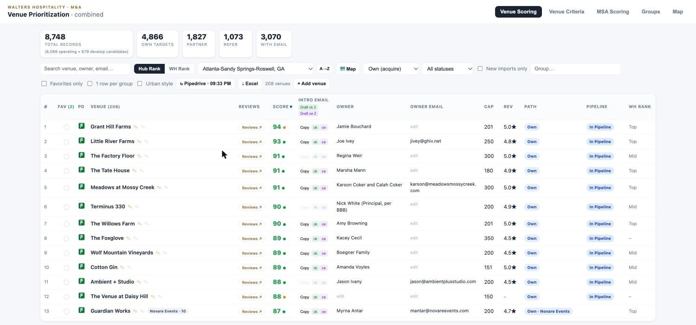
Atlanta, sorted by score: the market's leading venues are already in the pipeline.
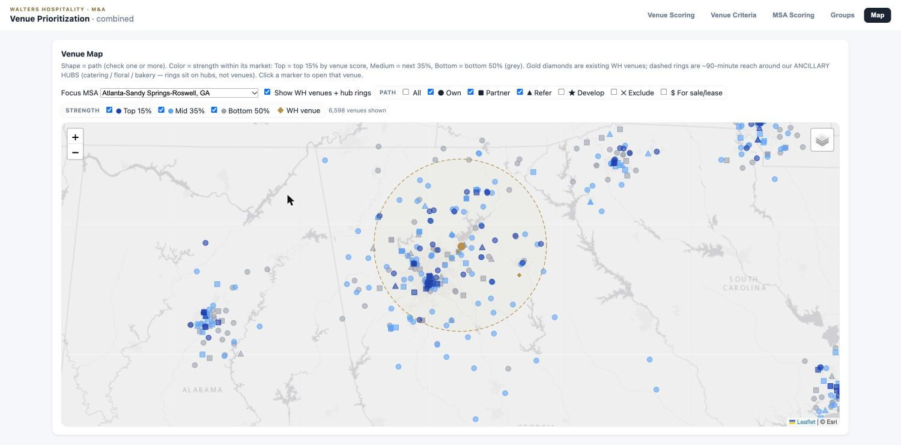
Atlanta map: our venues (gold), the 90-minute hub ring, every target by strength.
Every venue we could own, partner with, or refer: 8,748 records, 4,866 on the own path, owner email verified on 3,070. Each row carries the ten-factor score, reviews, capacity, MSA, path, and live Pipedrive stage. Tabs for venue criteria (weights editable), MSA scoring, the operator census, and a map with our venues and the 90-minute hub rings. A Develop lens tags lodges, churches, warehouses, and banquet halls that could become venues.
Density is planned here. Filtered to Atlanta, the top of the list is the market's leading venues (Grant Hill Farms 94, Little River Farms 93, Meadows 91), all already in the pipeline, and the map shows which of the 208 Atlanta venues sit inside the hub ring.
Laura and Karlee work each market's list from the top, drafting intro emails from the row. Before an LOI, the Reviews button compiles every public review. Before a visit, the map and Groups tab set the itinerary.
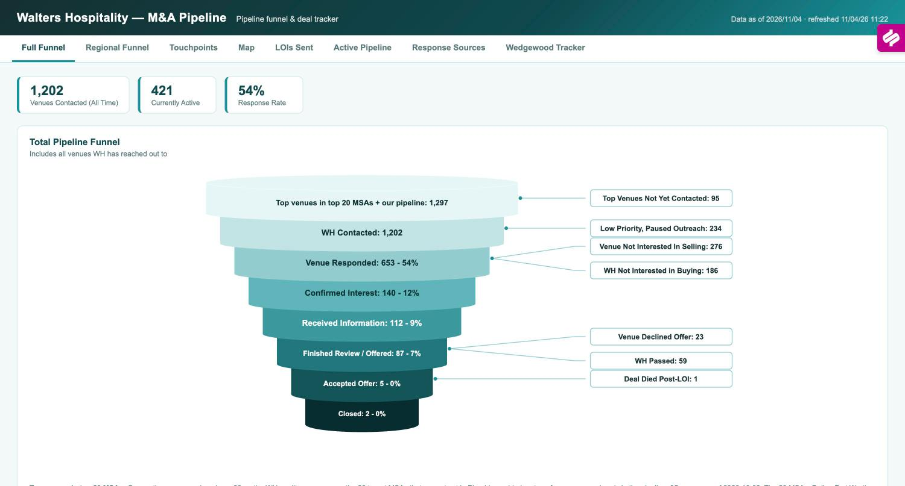
Total funnel with every exit labeled.
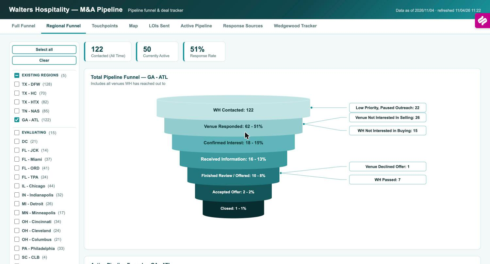
Atlanta: 122 contacted, 51% response, 18 confirmed interest.
Cate's live Pipedrive export: 1,202 contacted, 421 active, 54% response, every stage with its exits labeled (234 paused, 276 not selling, 186 we passed early, 23 declined our offer, 59 we passed after review). The Active funnel shows live work only: 315 awaiting response, 51 determining interest, 28 yet to share data, 25 under review. Regional Funnel cuts the same view for 44 regions with every venue listed under its stage.
This is the scoreboard for the strategy: whether a market produces conversations and where they stall. Atlanta: 122 contacted, 51% response, 18 confirmed, 10 reviewed, 2 accepted, 1 closed. Nashville responds at 69%, Minneapolis at 65%. The 95 top-tier venues not yet contacted are listed by market.
Anchors the Tuesday M&A Update to Wildcat and the Thursday deal review. The stage lists drive the two-week sweeps of stuck venues.
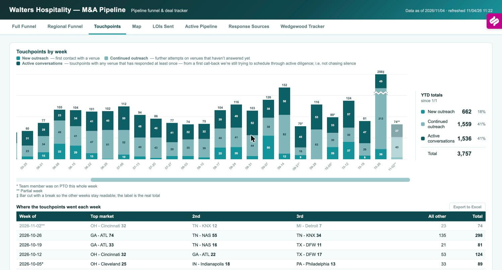
Weekly touchpoints by type; YTD 3,757.
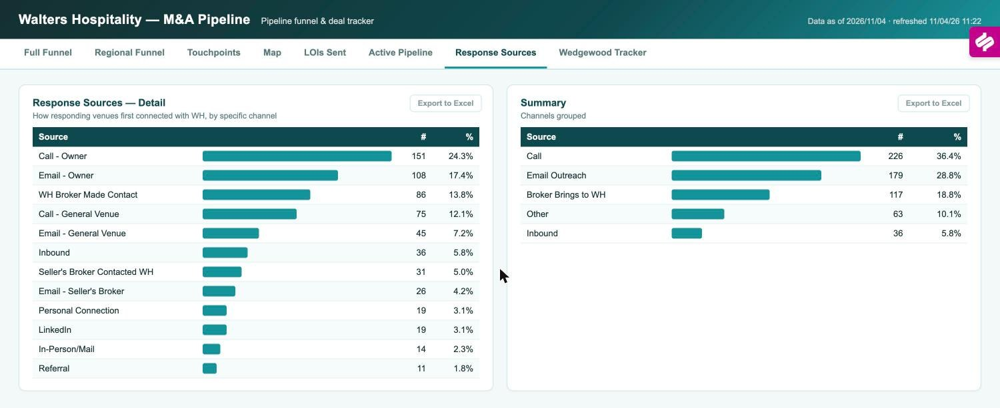
First-response channel for 621 responding venues.
Touchpoints by week since May, split into new outreach, follow-ups on silence, and active conversations: 3,757 YTD (662, 1,559, 1,536). The week of Oct 26 hit 298. Below the chart, where the touchpoints went by market. Response Sources shows how 621 responding venues first connected: calls 36%, email 29%, broker 19%, inbound 6%.
Outreach is the input we control, so this page proves the machine is running and tells us where to point it. Calls are answered 24 times per 100 vs 17 for email, and responders answer by the second touch, so the team calls first and stops chasing low-tier venues by email after touch 2.
Thursday call sets next week's market focus; monthly check that new-region waves land on schedule; quarterly board trend (+36% Q2 to Q3).
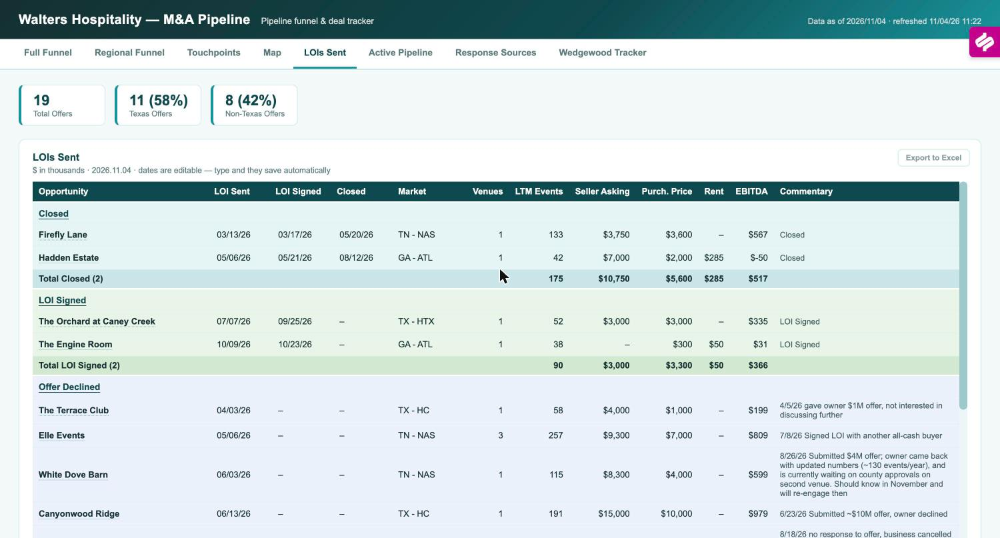
All 19 LOIs with terms and outcomes.
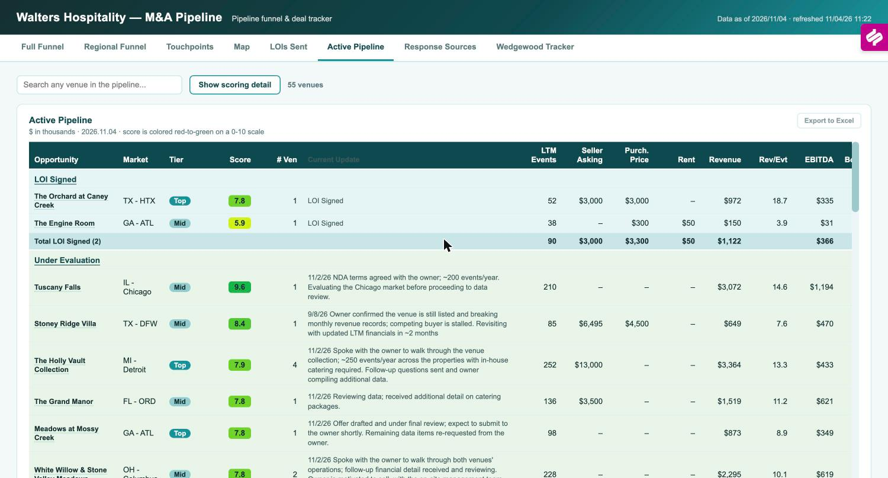
55 live targets scored 0 to 10 with economics.
The ledger lists all 19 offers with dates, market, LTM events, asking price, our price, rent, EBITDA, and outcome: 2 closed, 2 signed, 2 declined but re-engaging, 12 declined, 1 died after signing; 11 Texas, 8 outside. The Active Pipeline scores the 55 live targets 0 to 10 with LTM and pro-forma year-2 revenue and EBITDA, future bookings, and the latest note.
This is where valuation discipline shows. The commentary records why deals die: Canyonwood declined ~$10M, Videre priced business plus land far above earnings, Emerson needed $3.5M against $1.5M, Edible Ideas called $16M '100%+ off'. One lost to an all-cash buyer (Elle). Next LOIs in order: Meadows, D'Amico, Lillian Gardens, The Revere, Tuscany Falls (210 events, score 9.6).
Before every offer, the ledger sets comparables and the pipeline score frames the data book. It feeds the quarterly board slide and the Saturday scorecard (LOIs vs the 20 goal).
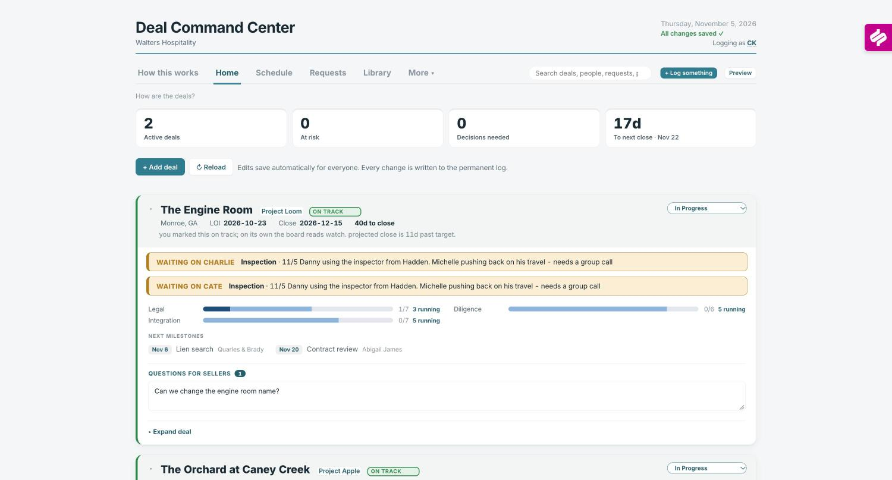
Home: 2 active deals, 0 at risk, next close in 17 days.
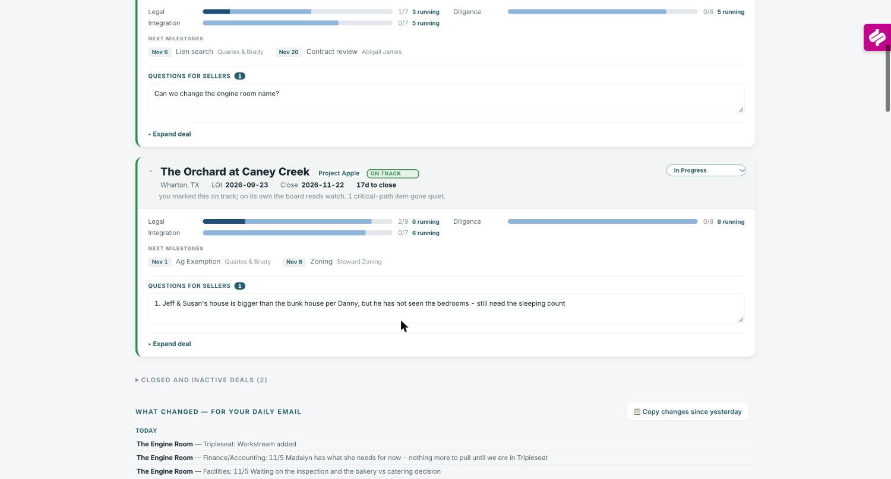
Per deal: workstreams, milestones, owners, open questions.
Autumn's board for every deal under contract: LOI and close dates, days to close, status with the board's own read beside ours, legal, diligence, and integration workstreams, next milestones with the third party on point, what is waiting on whom, and open seller questions. Schedule, Requests, and Library hold the calendar, request lists, and documents. Every change is logged.
Closing is where strategy becomes venues. Caney Creek: LOI Sept 25, legal 2 of 9, 8 streams running, close week of Nov 30, subdivision approval the open risk. Engine Room: LOI Oct 23, close Dec 15, alcohol license handled in the lease. Integration starts here, not at close.
The 7 am email comes from this log; the counsel all-hands works off the milestones; at close the integration workstream hands to Abigail with the history intact.
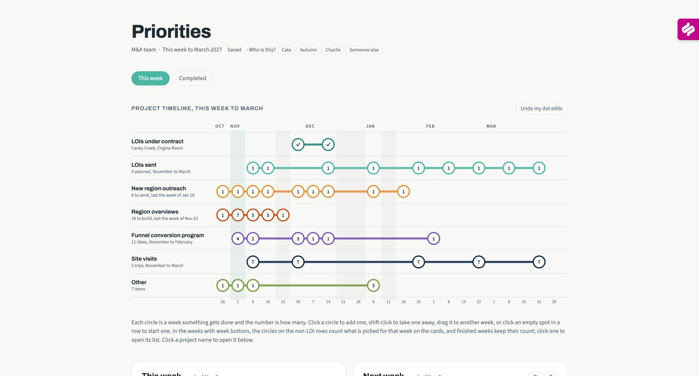
Timeline: seven workstreams to March 2027.
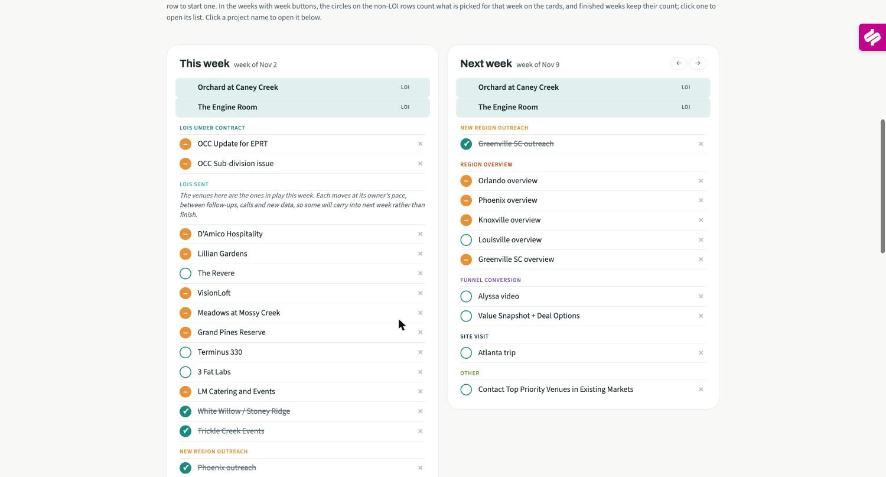
This week and next week: venues in play, overviews, conversion steps.
Seven workstreams on one timeline to March 2027: two deals under contract, 9 LOIs planned from 19 venues with data in hand, 8 new regions (one a week to Jan 18), 17 region overviews for Wildcat (by Nov 23), 11 conversion ideas, 5 site visits, and 7 other items. This-week and next-week cards list the venues and tasks; each deal carries a status.
The strategy with dates on it. Capacity and priority are visible before they collide, and the trade-off is explicit: pushing conversion ideas forward slows data packs or new-region outreach.
Cate sets the week on Monday; the 'LOIs sent' list is Thursday's agenda; monthly, Charlie and Cate check the timeline against the 2027 targets.
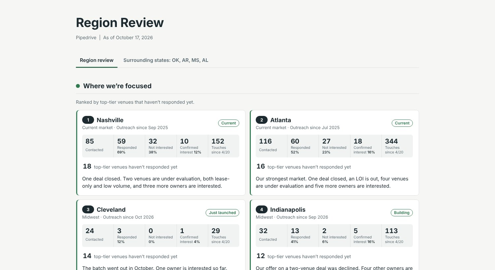
Region Review: where we're focused, ranked by top-tier venues not yet responding.
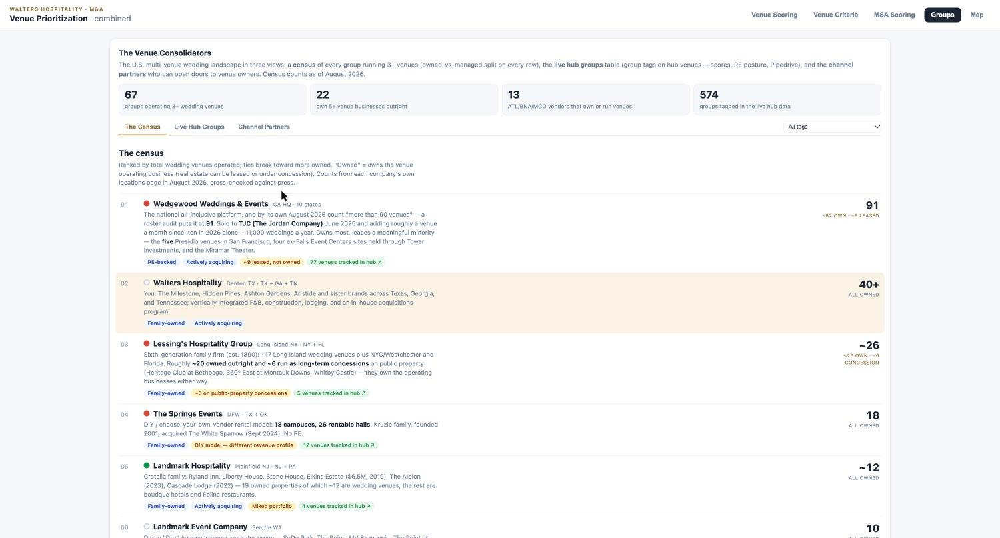
Groups census: 67 multi-venue operators, owned vs leased.
The Region Review ranks every market by top-tier venues not yet responding, with contacted, responded, confirmed interest, and touches for each, plus the paused and broker-led lists with reasons. Each focused market gets an overview pack for Wildcat: what owners are telling us, what offsets the negatives, weddings per 1,000, a county map, and the competitive set with ratings and drive times. The Groups tab is the census of 67 multi-venue operators (Wedgewood 91: about 82 owned, 9 leased) and the caterers and planners who open doors.
This keeps the market list honest: each market carries its own evidence, and the census shows who else is consolidating and which groups are platforms we could buy.
Before the Wildcat packet (Nov 23) and before every market visit; the Region Review's team questions are the agenda for decision 3.
| Initiative | What it is | Status and results | Done by |
|---|---|---|---|
| Quarterly Venue Trends one-pager | Key market trends sent to target owners as a reason to talk | Sent to 145 venues in October: 67% open, 6% reply and counting. Next edition Q1. | Running |
| Coffee Chat email | $10 Starbucks card to top-priority non-responders | 40 top-tier venues over two weeks: 80% open, 3% reply and counting. | Running |
| Prior seller references | Firefly Lane and Hadden owners as references and intro sources in their markets | Both engaged; Hadden referral program proposed Nov 4 (paid reference and intro calls, success fee on a close). | Week of Nov 2 |
| Acquisition announcements | Hadden to GA venues, Firefly Lane to TN venues, with an offer to speak to the seller | Drafts with marketing. | Week of Nov 30 |
| Updated outreach PDFs | Owner brochure and partner flyer refreshed | v2 built Nov 4; website acquisitions page gains owner quotes. | Week of Dec 7 |
| Value Snapshot + Deal Options | Two-pager after the first meeting: what is in it for them, multiples, how our process and valuation work | Drafting; moves the valuation conversation earlier. | Set date |
| Alyssa video | Short CEO message embedded in invites and announcements | Record in December. | Set date |
| Holiday gift A/B test | 25 watercolors or hats, ship by Dec 11, follow-up calls in January | Readout in February. | Week of Dec 7 |
| Quarterly owner note | Marketing produces, M&A reviews; January, April, July, October | Draft by mid-December. | Week of Dec 14 |
| CPA and advisor channel | 2 to 3 firms each in Atlanta and Nashville, then Houston and Dallas in March | January. | Week of Jan 4 |
| Association meetings | WIPA pilot in Atlanta and Nashville | February. | Week of Feb 1 |
Also running from the October pipeline analysis: call-first outreach with email stopping at touch 2 for low-tier venues; a two-week sweep of the 48 venues stuck at "responded" and the 16 confirmed-interest venues older than 60 days, one specific ask each; a multi-venue operator track with Charlie or Cate on the call (121 groups, 423 venues in the funnel, 57% response).
| Workstream | Scope | Timing |
|---|---|---|
| Deals under contract | Caney Creek (subdivision approval, EPRT update, inspection costs); The Engine Room (APA and lease with Quarles, alcohol license, environmental, inspection) | Close week of Nov 30 and Dec 15 |
| LOIs sent | 19 venues with data in hand; next most likely Meadows at Mossy Creek, Lillian Gardens, The Revere, D'Amico; also VisionLoft, Tuscany Falls, LM, Grand Pines, Holly Vault, BTTS, Little River Farms | 9 planned, November to March |
| Region overviews for Wildcat | Minneapolis, Cincinnati, Indianapolis, Detroit, Chicago, Cleveland this month; Greenville, Orlando, Phoenix, Knoxville, Louisville, Pittsburgh, Birmingham, Buffalo, Memphis, Hartford next; packet finalized | 17 by the week of Nov 23 |
| New-region outreach | Phoenix (sent), Greenville, Memphis, Louisville, Pittsburgh, Birmingham, Buffalo, Hartford | One a week, last Jan 18 |
| Site visits | Atlanta (Nov 9: West Midtown, Little River Farms, The Revere, Engine Room), Knoxville (Nov 30: Spaces in the City, Nichols Heir), then January, February, March | About one a month |
| Other | Nashville vendor-partner outreach; venue database (every data book side by side); Pipedrive clean-up; post-close dashboard (projections vs actuals); improve the Atlanta response rate (51%) | November to Jan 4 |
| Fewer, better deals | More market deals | |
|---|---|---|
| What it means | The market's leading venues at full price: top-15% quality, 100+ events, owned real estate where it makes sense. Two to four closes a year. | Density fast: mid-tier infill, leases, platforms, conversions at earnings value. Six to ten closes a year across several structures. |
| Density | Slower to 5 per market; each venue pulls the market's lead pool and sets the price ladder. | Faster to 5 per market; hub economics arrive sooner; brand set by the best of a mixed portfolio. |
| Capital and risk | More capital per deal, more real estate, higher multiples (Firefly Lane 6.3x LTM). Fewer, larger bets. | Less capital per deal, more leases and earnouts, more integration load. More, smaller bets; more can go wrong at once. |
| The team | Deep work on 20 to 30 named targets; less new-region outreach; Charlie and Cate on every owner call. | Outreach at full pace; standard lease and management terms; integration capacity added before deal capacity. |
| We stop | Chasing sub-$500k EBITDA venues and most lease-only urban product. | Paying up for anchors when infill is available at earnings value. |
| Wildcat hears | Judgment and selectivity; a slower unit count. | Pace and density; more structure questions on every LOI. |
2026 pace: 19 LOIs, 2 closed, 2 closing by mid-December, roughly $9M of purchase price across the four; 9 more LOIs planned by March. This number sets headcount and capital in the 2027 budget (Dec 4).
Today: the hub's eight-factor score with the Wedgewood haircut, plus the five qualitative factors on page 4.
Today: weekly update email and call; Wildcat comments on LOIs before they go out. Meadows moved after Wildcat's last look; a written rule is expected.